With the datasets and preprocessing addressed, this chapter, chapter:fish-species-and-part-identification, focuses on the investigations of transformer-based methods for fish species and fish body part identification, which aim to discover the model with the best performance for each task. Two transformer-based classification algorithms explored in this chapter are Transformers, Ensemble Transformers, and Mixture of Experts (MOE) Transformers. The proposed methods are evaluated in terms of their balanced classification performance, computational cost, and interpretability. This evaluation is supported by ablation studies on the Mixture of Experts architecture. Interpretability is assessed with post-hoc explainable AI methods, including Local Interpretable Model-agnostic Explanation (LIME) and Gradient-weighted Class Activation Mapping (Grad-CAM), applied to the best-performing methods. The post-hoc interpretability methods identify the key mass-to-charge ratios that drive classification decisions, and, therefore, offer biochemical insights into the model predictions.
Chapter Overview
The traditional analysis of Rapid Evaporative Ionization Mass Spectrometry (REIMS) data has relied on multivariate statistical techniques such as Orthogonal Partial Least Squares Discriminant Analysis (OPLS-DA) [Bylesjo, 2006]. A significant drawback of this approach is that these methods struggle to capture the full complexity of non-linear relationships and sequential dependencies present in high-dimensional mass spectrometry data. Furthermore, applying these techniques often requires significant domain expertise and hyperparameter tuning, creating a bottleneck for the rapid, automated analysis required in fish processing factories [Black, 2019]. Therefore, the conventional method of analysis should be reconsidered in favor of a more principled, data-informed approach.
The emerging field of deep learning provides an alternative approach that aims to overcome these limitations by automatically learning hierarchical feature representations directly from raw data [Goodfellow, 2016]. Initial deep learning models have shown promise in handling complex, high-dimensional data across various domains. However, they often face challenges with the scarcity of labeled training samples due to the resource-intensive nature of REIMS sample preparation. Additionally, a persistent limitation of deep learning models is their ``black-box" nature, which can hinder adoption by domain experts who need to verify the reasoning behind a decision [Castelvecchi, 2016].
This chapter aims to resolve these issues through a newly proposed framework of advanced machine learning techniques designed for REIMS data. The framework is built upon the Transformer architecture [Vaswani2017] and is enhanced with two specialized variants to tackle specific challenges. To augment model capacity and encourage specialization, Mixture of Experts (MoE) Transformers are introduced to divide the complex analysis among several expert sub-networks, improving performance through a divide and conquer’ strategy [Jacobs, 1991][Kaiser, 2017]. To capture spectral patterns at multiple scales simultaneously, a stacked voting ensemble of multi-scale Transformers is proposed, combining shallow, medium, and deep models to create a more robust and comprehensive analysis [Wolpert, 1992].
This contribution innovates existing approaches to REIMS data analysis by introducing a suite of deep learning models that consistently outperform traditional analytical methods. By systematically developing and evaluating these advanced architectures, the framework provides a scalable and powerful toolkit for fish fraud detection. To address the black-box problem, the framework integrates post-hoc explainability methods like LIME [Ribeiro, 2016] and Grad-CAM [Selvaraju, 2017], which provide crucial insights into which \(m/z\) ratios are driving classification decisions. This branch of explainable, high-performance analysis provides a new, powerful paradigm for improving quality control in fish processing, which has, until recently, not been explored.
Contributions
The main contributions of the chapter are:
- This chapter proposes the novel application of MoE Transformers for REIMS-based marine biomass analysis. The method is called "Gone Phishing", a pun that addresses the application of computer algorithms for fish fraud detection applications, which combines Mixture of Experts and Transformers, with a custom-made neural network architecture suited towards 1D mass spectrometry data. As far as the authors are aware, this is the first application of MoE, let alone MoE Transformers, to REIMS-based biomass analysis.
- This chapter proposes the novel application of a stacked voting ensemble classifier of multi-scale transformers for REIMS-based marine biomass analysis. The method is called `"Autobots", a pun on a team of diverse transformers, highlighting that they perform good when they work together. The ensemble transformer is applied to all four classification tasks, often taking first or second place in terms of test classification accuracy. As far as the authors are aware, this is the first application of Multi-scale Ensemble Transformer to REIMS-based marine biomass analysis.
Transformer-Based Models for Mass Spectrometry Analysis
To overcome the limitations of traditional analytical techniques, this research leverages deep learning to effectively model the complex, sequential nature of REIMS data. At the heart of this approach are transformer-based models, which are uniquely suited to capture the intricate, long-range dependencies within mass spectra. This section details the specific architectures and training methodologies that were developed and adapted for one-dimensional REIMS data.
Core Transformer Architecture
The foundational model developed in this thesis is an encoder-only Transformer, inspired by the original architecture from Vaswani et al. [Vaswani2017] but specifically designed for mass spectrometry sequences. The architecture is illustrated in fig:transformer-architecture. The key innovations of this design, and its main differences from the original Transformer, are the use of No Positional Embeddings (NoPE), pre-norm layer normalization, and the GELU activation function. The following sections will detail the justification and reasoning behind these architectural decisions.
The model is constructed from stacked encoder layers. Each encoder layer is comprised of two primary sub-layers: a multi-head self-attention mechanism and a position-wise feed-forward network (FFN).
In the first sub-layer, the multi-head self-attention mechanism allows the model to dynamically weigh the importance of different parts of the input sequence when processing a specific position. Rather than relying on a single attention function, it performs this process in parallel across multiple heads. Each head learns a distinct aspect of the relationships between sequence elements, such as short-range or long-range dependencies. The outputs of these parallel heads are then concatenated and linearly projected, enabling the model to jointly attend to information from different representation subspaces.
The second sub-layer is a position-wise feed-forward network (FFN). This network, which consists of two linear transformations with a GELU activation function in between, is applied independently to each position"s representation from the attention sub-layer. While the same FFN (with the same weights) is applied to every position, it allows for a non-linear transformation of each position's features, further refining the information and adding representational capacity to the encoder layer. The technical details of these sub-layers were explained for reference in the literature review section.
To facilitate gradient flow in a deep network architecture, residual connections [He, 2016] are employed around each sub-layer. These connections, also known as skip connections, add the input of a layer to its output, creating a direct path for the gradient during backpropagation. This mechanism is crucial for mitigating the vanishing gradient problem and enabling the effective training of deeper models. In conjunction with this, a pre-norm formulation of layer normalization [Ba, 2016][Xiong, 2020] is applied before the multi-head attention and feed-forward components. This strategy stabilizes training dynamics, improves convergence speed, and ensures more consistent gradient flow throughout the model.
A significant architectural adaptation for REIMS data is the deliberate omission of explicit positional embeddings, a technique known as No Positional Embeddings (NoPE) [Wang2024]. In many sequence-based tasks, positional embeddings are required to inform the model of the order of elements. However, for mass spectrometry data, the position of a value along the mass-to-charge (m/z) axis is not arbitrary; it inherently contains its sequential and relational information. This intrinsic ordering makes separate positional encodings redundant. This was confirmed empirically through preliminary ablation studies, which demonstrated that including standard positional embeddings was detrimental to classification performance across all tasks.
The Gaussian Error Linear Unit (GELU) [Hendrycks, 2016] is utilized as the activation function. Unlike the Rectified Linear Unit (ReLU), which acts as a hard, deterministic gate, GELU provides a smoother, probabilistic gating mechanism by weighting an input by its percentile in a Gaussian distribution, a property that often leads to improved model performance. For regularization, dropout [Srivastava, 2014] is applied within the network. This technique randomly sets a fraction of neuron activations to zero during training, which prevents complex co-adaptation of features. This can be interpreted as efficiently training a large ensemble of thinned subnetworks, thereby improving the model's generalization capabilities.
The AdamW optimizer [Loshchilov, 2017] is used for model training, benefiting from its decoupled weight decay. This approach separates the L2 regularization from the adaptive gradient updates, allowing weight decay to function as an effective regularization technique that is independent of the learning rate, which often leads to better generalization. To further prevent overfitting, two complementary strategies are implemented: label smoothing [Szegedy, 2016] and early stopping [Morgan, 1989][Goodfellow, 2016].
Label smoothing discourages the model from making overconfident predictions by replacing hard one-hot labels with a softened probability distribution, which regularizes the model and improves calibration. Early stopping provides an additional safeguard by halting the training process when performance on a held-out validation set ceases to improve, thus capturing the model at its point of optimal generalization. A patience parameter is included in the early stopping to account for small fluctuations in the validation performance. Finally, the output for classification is generated using global average pooling across the sequence dimension. This technique aggregates information from the entire mass spectrum by averaging the feature vectors from the final encoder layer, creating a single, holistic representation that ensures the final decision is based on the entire sequence.
Mixture of Experts (MoE) Transformer Enhancement
To augment model capacity and foster the development of specialized representations without a proportional increase in computational demand, the standard Transformer architecture is enhanced with a Mixture of Experts (MoE) layer. The MoE architecture achieves this efficiency through sparse activation. Instead of a single, dense feed-forward network, it uses numerous smaller `"expert" networks and a trainable gating mechanism that routes each input token to a small subset of the most relevant experts. Consequently, while the total number of model parameters increases significantly, the computational cost (FLOPs) per token remains constant because only a fraction of the experts are engaged during a forward pass. This conditional computation allows the model to scale its capacity efficiently while encouraging different experts to specialize in distinct data patterns. Building upon the foundational Transformer architecture of [Vaswani2017], the key modification involves replacing the standard position-wise feed-forward networks (FFNs) within the encoder blocks with these MoE layers [Jacobs, 1991][Kaiser, 2017]. As illustrated in fig:moe-architecture, each MoE layer comprises multiple independent expert sub-networks alongside a trainable gating mechanism that dynamically determines which experts process each input token.
Each expert within the MoE layer is a complete two-layer feed-forward neural network, which includes an input projection, a GELU activation function, dropout for regularization, and an output projection. A crucial component of the MoE design is the routing strategy, and this architecture supports two distinct mechanisms. The primary strategy is Top-k routing, where the learned gating network directs each input token to the Top-k most relevant experts (typically \(k=2\)), and their outputs are then combined as a weighted sum based on the gating scores. As an alternative, a Majority Voting approach is also implemented, where every token is processed by all experts and their outputs are averaged with equal weighting. This latter approach prioritizes potential gains in model robustness and stability over the computational efficiency of sparse routing.
We propose to incorporate several key architectural differences from standard MoE models to enhance flexibility and analysis. A primary distinction is the support for dual routing strategies, allowing for empirical comparison between sparse Top-k routing and dense Majority Voting. The model also integrates comprehensive monitoring of expert usage patterns to diagnose and mitigate potential issues like expert collapse, where some experts are chronically underutilized. Furthermore, a simplified architecture maintains a clear separation between the self-attention and MoE components, linked by residual connections, which facilitates easier analysis of each component"s independent contribution to the model's performance. Finally, all model dimensions and hyperparameters have been specifically tuned for the unique characteristics of one-dimensional mass spectrometry data.
The model is implemented in PyTorch [Paszke, 2019], featuring an efficient multi-head attention mechanism that uses a single matrix multiplication for all query, key, and value projections. The network is trained using the AdamW optimizer [Loshchilov, 2017], which is selected for its effective handling of decoupled weight decay. To dynamically manage the learning rate during training, a ReduceLROnPlateau scheduler is employed, which decreases the learning rate when validation performance stagnates, facilitating more stable convergence.
Ensemble Transformer
Our proposed model is a stacked voting ensemble classifier, an architecture based on the principles of Stacked Generalization introduced by Wolpert [Wolpert, 1992]. Following Wolpert's framework, our model consists of two levels. The level-0 generalizers are three independent Transformer models with varying complexities (2, 4, and 8 layers/heads, respectively). We also try a CNN + LSTM + Transformer stacked voting ensemble classifier in our experiments. The outputs of these base models are then fed into a level-1 generalizer, or meta-model. In our implementation, illustrated in fig:ensemble-transformer, this meta-model is a learnable weighted combination of the level-0 predictions. By training these weights, the model learns to optimally combine the outputs, effectively correcting for the individual biases of each Transformer and improving overall generalization performance, which is the central goal of Wolpert's original work.
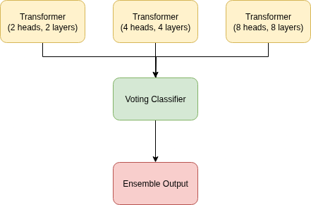
By leveraging three different layer/head transformers, we essentially create a multi-resolution or multi-scale model. The number of layers determines the depth and complexity of the features it can learn. The shallow transformer (e.g., 2 layers) is looking at the data in low resolution. It can only perform a few steps of processing, so it tends to learn simple, coarse, and more general features. The deep transformer (e.g., 8 layers) is looking at the data in high resolution. With more layers, it can build increasingly abstract and complex representations. The middle resolution transformer (e.g., 4 layers) is a balance of both, offering medium resolution analysis. By having all three transformers in the ensemble, we are essentially analyzing the data at multiple scales simultaneously.
If layers provide depth of analysis (scale), then attention heads provide breadth of analysis. Each attention head learns to focus on different types of relationships within the data. For example, with a transformer with fewer heads (e.g., 2 heads), each head must be a generalist; it must learn to find the most important relationships overall. Conversely, a transformer with more heads (e.g., 8 heads) can afford to have some heads specialize. One head may learn to focus on relationships between nearby elements (local texture), while another learns to focus on relationships between distant but related elements (e.g., connecting part of a head to a fillet). The transformer with a medium number of heads offers a balance between the generalist and the specialist, a medium resolution analysis of the features. By varying the number of heads, this contributes to the diversity by allowing each model to look for different kinds of patterns and relationships.
The stacked ensemble does not force one model to be a master of all trades. Instead, we have created a team of specialists: a low-resolution expert, a balanced expert, and a high-resolution expert. The stacking mechanism acts as the manager of these teams. It learns from the output of all three experts and figures out how to combine their different resolutions or scales to make the most accurate final decision. In an easy case, the low-resolution model's confident prediction is enough. But for more difficult cases, it might learn to trust the high-resolution model's analysis more.
Experimental Setup
Having outlined our various machine learning approaches for analyzing REIMS data, we now describe the experimental setup used to evaluate these methods, including the benchmark technique, datasets, and parameter settings used in our evaluation.
Benchmark Methods
The selection of benchmark methods is intended to evaluate the performance of the proposed Transformed-based methods against the current state-of-the-art. Additionally, the selected methods enable direct comparison of the transformer and its variants, which aids in selecting the best method overall. This paper evaluates a diverse range of machine learning techniques to classify the REIMS spectra:
- Basic method: Orthogonal Partial Least Squares Disrciminant Analysis (OPLS-DA) Bylesjoe2006. OPLS-DA is a supervised multivariate analysis technique that separates predictive from non-predictive variation in complex datasets to improve model interpretability and identify variables that drive class separation.
- Traditional machine learning methods: Random Forest (RF) Ho1995, K-Nearest Neighbors (KNN) Fix1989, Decision Trees (DT) Breiman2017, Naive Bayes (NB) Hand2001, Logistic Regression (LR) Kleinbaum2002, Support Vector Machines (SVM) Cortes1995, and Linear Discriminant Analysis (LDA) Balakrishnama1998.
- Ensemble method: Hansen1990: A combination of the above traditional methods. A hard-voting ensemble classifier combines multiple base classifiers by having each classifier make a prediction and taking the most common predicted class label as the final output through majority voting.
- Deep neural networks: Transformer Vaswani2017,Devlin2018, Long Short-Term Memory (LSTM) Hochreiter1997, Variational Autoencoder (VAE) Kingma2013, Convolutional Neural Network (CNN) LeCun1989a,LeCun1998, Kolmogorov-Arnold Networks (KAN) Liu2024 and Mamba Gu2023.
- Genetic Programming: Multiple Class Independent Feature Construction (MCIFC) Tran2016, Tran2019. The MCIFC algorithm represents candidate solutions as multiple trees, with one subtree per class. This structure serves feature construction and classification purposes, employing a winner-takes-all strategy for class prediction.
Where applicable, the hyperparameter selection has been standardized across all methods to allow fair comparison.
Benchmark Techniques
To evaluate the performance of the proposed deep learning methods, we compare them against a suite of established analytical techniques commonly used for REIMS data. These benchmarks are drawn from both traditional multivariate statistics (chemometrics) and conventional machine learning.
The primary benchmark is Orthogonal Partial Least Squares Discriminant Analysis (OPLS-DA) [Bylesjo, 2006]. This is a supervised chemometric method that has long been considered a ``gold standard" for REIMS biomass analysis due to its prominent use and high performance in the literature [Balog, 2010][Jha, 2015][Black, 2017][Black, 2019]. Its strength lies in its ability to separate systematic variation into predictive and orthogonal (non-predictive) components, making it powerful for both classification and biomarker identification. Its continued use in recent, high-performing studies for fish speciation [Shen, 2020][Shen, 2022], pork traceability [Gkarane, 2025], and lamb traceability [Gao, 2025] confirms its status as a critical baseline.
Beyond OPLS-DA, we also benchmark against conventional machine learning models, as their use in REIMS analysis is a current and active area of research [Xue, 2025]. This includes:
- Support Vector Machines (SVM)
- Random Forest (RF)
- K-Nearest Neighbors (KNN)
Recent studies have directly compared these models to chemometric methods with mixed results. For instance, De Graeve (2023) compared RF and SVM directly against OPLS-DA for large-scale fish speciation, finding that the traditional OPLS-DA was more robust and ``industry-proof." Conversely, Lu (2024) found that a KNN model outperformed other classifiers for the geographical authentication of fish. Other studies, such as for lamb traceability, have used SVM and RF alongside OPLS-DA as part of their standard analysis pipeline [Gao, 2025].
Therefore, this thesis uses OPLS-DA, SVM, RF, and KNN as a comprehensive benchmark suite. This allows for a robust evaluation of the proposed deep learning architectures against not just the historical standard (OPLS-DA) but also against the current, non-deep-learning machine learning alternatives.
Experimental Settings
Each method is evaluated, and the average is given over 30 independent runs. Stratified k-fold cross-validation, with \(k=5\) for fish species and \(k=3\) for body parts, is particularly beneficial for evaluating model performance on datasets with limited training samples and imbalanced classes. This method ensures that each fold maintains a class distribution similar to the entire dataset, which helps the model learn effectively from both majority and minority classes. By doing so, it reduces the variance of performance estimates, leading to more stable and reliable metrics. Additionally, it maximizes the use of available data, allowing each sample to contribute to both training and validation, which is crucial for small datasets. With three and five-fold cross-validation, the model is tested across various scenarios, improving its generalization to unseen data and providing a comprehensive evaluation of its performance.
Parameter Settings
Experiments use the default settings from sklearn [Pedregosa, 2011], except SVM with a linear kernel, and LR set to 2,000 for the maximum number of iterations. The ensemble voting classifier combines all the traditional machine learning methods into one model. The ensemble uses hard voting, i.e., uses predicted class labels for majority rule voting.
The deep learning models all use the following parameters. The AdamW optimizer [Loshchilov, 2017] decouples weight decay from the learning rate, an improvement over the popular Adam optimizer [Kingma, 2013]. Dropout [Srivastava, 2014] turns off neurons at random during training to efficiently approximate a bagged ensemble of sub-neural networks. Label smoothing [Szegedy, 2015] softens class labels by combining the one-hot encodings with a uniform distribution, adding noise to the class labels. The deep learning networks use Gaussian error linear units (GELU) [Hendrycks, 2016] for activation functions. Early stopping [Morgan, 1989] is one of the most common forms of regularization, which saves the model parameters when the validation loss improves, and it tunes the hyperparameter of epochs [Goodfellow, 2016]. To allow fair comparison, each model has the same hyperparameters: a hidden dimension of 128, trained for 100 epochs, a learning rate of 1e-5, a batch size of 64, 4 layers (where applicable), dropout of \(p=0.2\), and label smoothing of 0.1.
tab:transformer-parameters gives the configuration of hyperparameters for the transformer - these settings were derived through trial and error via experimentation.
We follow the original paper for the parameter settings for MCIFC [Tran, 2019]. We use a construction ratio of 1, allowing for one tree per class.
Results and Analysis
Having outlined our classification strategies, this section now presents and interprets the outcomes of applying these various machine learning techniques to the REIMS datasets. tab:species_results and tab:parts_results give the results of the classifiers on the training and test set, with the best-performing model on the test set given in bold, and the second-best are given in italics.
Note that the method pre-trained indicates the transformer with progressive left-to-right masked pre-training. The transformer was pre-trained on the training data of each fold during stratified k-fold cross-validation.
Overall Performance
Fish Species Classification
For the task of fish species classification, the best-performing models were the MoE Transformer (100%). The second-best performing model is the Ensemble Transformer with 99.67% test accuracy on the fish species dataset. This demonstrates the strengths of ensemble theory, where the combination of multiple diverse models, each with its strengths and weaknesses, leads to a more powerful and robust classifier by correcting for individual errors. This model excels in capturing the intricate patterns in the REIMS data, which provides distinct signatures for different fish species. The pretrained transformer (99.62%) outperformed the regular transformer (99.17%), demonstrating the benefits of unsupervised pretraining for this task.
Among the deep learning models, the Ensemble Transformer exhibits the lowest variance. Similarly, the traditional ensemble model shows the lowest variance when compared to the other traditional machine learning methods. In general, ensemble classifiers have lower variance due to a statistical principle referred to as the "wisdom of the crowds". As long as the models' errors are not perfectly correlated, the variance of the ensemble's average prediction will be lower than the average variance of the individual models. Simply put, if the models are truly independent, their errors or idiosyncrasies cancel each other out during the averaging process. This principle is most effective when the base models are diverse, ensuring their errors are not the same. Furthermore, stacking provides an intelligent combination of the base models' outputs, as the meta-model learns the most effective way to weigh each model's vote, creating a final prediction that is more robust than a simple average.
The high performance of the decision tree model (99.17%) shows that even traditional machine learning methods are highly effective in this domain. The tree-based models like Decision Trees and Random Forests work well because they can split the data based on highly discriminative features, capturing non-linear relationships effectively. For a decision tree, while individual splits are linear (axis-parallel), their combination creates non-linear decision boundaries.
The consistently high test accuracy across all models suggests that the REIMS dataset for fish species contains strong, distinguishable signals that can be effectively exploited by various machine learning techniques. This makes the classification task easier for both deep learning models and traditional methods. The models excel at this task because the REIMS data likely provides clear, consistent, and high-dimensional representations of species differences, which can be leveraged by the deep architectures for feature extraction and by traditional methods for decision-making.
All the deep learning models consistently outperform the traditional OPLS-DA method, with the MoE transformer achieving perfect test accuracy, according to the literature for REIMS analysis. The research field of REIMS analysis should consider deep learning methods for other applications, as they offer superior performance.
Fish Body Part Classification
The Ensemble Transformer performed the best in the task of classifying fish body parts, achieving a test accuracy of 74.13%. This result reaffirms the benefits of ensemble theory and demonstrates that among the tested deep learning architectures, the ensemble model exhibits the lowest variance. In contrast, the ensemble model was trained from scratch, allowing it to specialize entirely on this task without carrying over irrelevant features. The fish classification task may also be too focused for the Mixture of Experts (MoE) architecture to find a significant advantage, as the robustness gained through the ensemble's aggregation proved more effective than the MoE's dynamic specialization.
The Ensemble Transformer is not a random collection of models but a purposefully designed system of diverse experts, consisting of a shallow (2-layer), medium (4-layer), and deep (8-layer) Transformer. The shallow model may excel at capturing coarse, obvious features, the deep model might be better at learning fine-grained textures, while the medium model provides a balance. For instance, the stacked meta-learner may learn that for a clear `"head" prediction, it should trust all three models. However, for a more difficult or ambiguous case, it might learn that the deep model"s detailed analysis is more reliable. This structured combination is more powerful than a single, monolithic model attempting to be proficient at all levels of feature complexity simultaneously.
The transformer models are well-suited for this task because they can handle complex and multi-dimensional input data like REIMS, capturing the subtle differences between body parts through advanced feature extraction and context awareness. LSTMs, with their ability to capture sequential dependencies, also perform well (72.11%), suggesting some temporal or positional dependencies in the ionization patterns that relate to specific body parts.
Traditional machine learning methods, however, show lower performance compared to the fish species classification task. This suggests that classifying fish body parts is inherently more complex due to less distinct signal differences between body parts, making it harder for simpler models to differentiate between classes. This increased difficulty likely arises from fewer training instances in the fish body parts dataset or overlapping chemical compositions between different parts of the same species. Previous work [Wood, 2022] on fish species and body parts classification with gas chromatography data illustrated the increased difficulty of body parts classification.
Again, all the deep learning methods - with the ensemble transformer achieving the best test accuracy at 74.13% - outperform the OPLS-DA method (51.17%). For the second task, deep learning methods have proven to be superior to the traditional approach from the literature.
Summary:
Across all tasks, the deep learning methods offered superior performance to the OPLS-DA method that dominates the literature [Balog, 2010][Jha, 2015][Black, 2017][Black, 2019] on REIMS analysis. Future work in the field for other applications of REIMS analysis should consider deep learning methods as a viable alternative. The varying performance of different models across tasks highlights the importance of selecting appropriate algorithms for specific analytical challenges in marine biomass analysis. While the transformer model consistently excelled, simpler models like decision trees demonstrated competitive performance in certain tasks, offering potential advantages in terms of interpretability and computational efficiency. The challenges faced in body part classification point to areas where further research is needed. This might include exploring more advanced feature extraction techniques, increasing the size and diversity of the training dataset, or developing specialised model architectures tailored to these specific tasks. Overall, our results demonstrate the potential of combining REIMS with machine learning for automated and accurate marine biomass analysis, while also highlighting areas for future improvement and research.
Visualization
While the performance of our vanilla and pretrained transformers is promising, understanding how they arrive at their predictions is crucial for building trust and gaining insights. It is important to identify important features driving decisions made by black-box models, such that these models can be understood, trusted, and verified by domain experts in chemistry and fish processing. To address this, we employ Local Interpretable Model-agnostic Explanations (LIME), a technique used to explain predictions made by complex black-box machine learning models [Ribeiro, 2016]. We analyze the top 5 most important features of the top-performing models that have been identified by LIME. LIME approximates a complex model's behaviour with a simpler and interpretable model (e.g., linear regression) for a specific instance in a local area to be understood. LIME creates and evaluates many altered versions through perturbations of an instance in the input data to see how those perturbations change the prediction. Through perturbations and their observed changes to the prediction, this information is used to generate a local explanation that highlights which features influenced the prediction. LIME explanations, or feature importance charts, are used to explain the predictions of machine learning models by showing which features (in this case, specific mass-to-charge ratios) are most influential for a particular prediction. In these LIME charts:
- Green bars: These represent features (mass-to-charge ratios) that contribute positively towards the predicted class. In other words, the presence or higher intensity of these features increases the likelihood of the sample being classified as the predicted class.
- Red bars: These represent features that contribute negatively towards the predicted class. The presence or higher intensity of these features decreases the likelihood of the sample being classified as the predicted class.
- The x-axis: The length of each bar indicates the magnitude of the feature's importance. Longer bars (whether green or red) signify that the corresponding feature strongly influences the model's prediction. The x-axis represents the feature's importance.
- The y-axis: This represents the mass-to-charge (m/z) ratios and their intensity thresholds from the mass spectrometry data. The y-axis represents the important features.
The 1D Grad-CAM [Selvaraju, 2017] implementation visualizes which features in mass spectrometry data most influence a transformer model's classification decisions. For correctly classified samples, Grad-Cam generates an average correct gradcam by calculating the mean importance across all correctly predicted samples. This visualization shows which mass spectrometry peaks (represented by feature indices) consistently contribute to accurate classifications. The implementation works by capturing gradients flowing through the model's last attention layer during backpropagation, weighting each feature's activation by its gradient, and normalizing the results. The resulting graph highlights regions in the mass spectrum that are most discriminative for classification, providing interpretability for what would otherwise be a black box model. This insight is particularly valuable for mass spectrometry applications, where understanding which mass-to-charge ratios drive classification can provide biochemical insights into the underlying samples.
Fish Species Classification
The pre-trained transformer demonstrates near-perfect performance on species identification, clocking in one of the best classification accuracies at \(99.62\%\). To peek inside this 'black box' model, we examine the LIME and Grad-CAM outputs to pinpoint the molecular ions driving the decision.
fig:lime-transformer-species-mackerel illustrates the LIME explanation for a Mackerel prediction. The decisive feature is the high abundance (normalized intensity \(0.28 < y \le 0.47\)) of the molecular ion \(m/z~794.0990\), marked by the strongest green bar. This strong positive correlation confirms this ion as a signature marker for the Mackerel species.
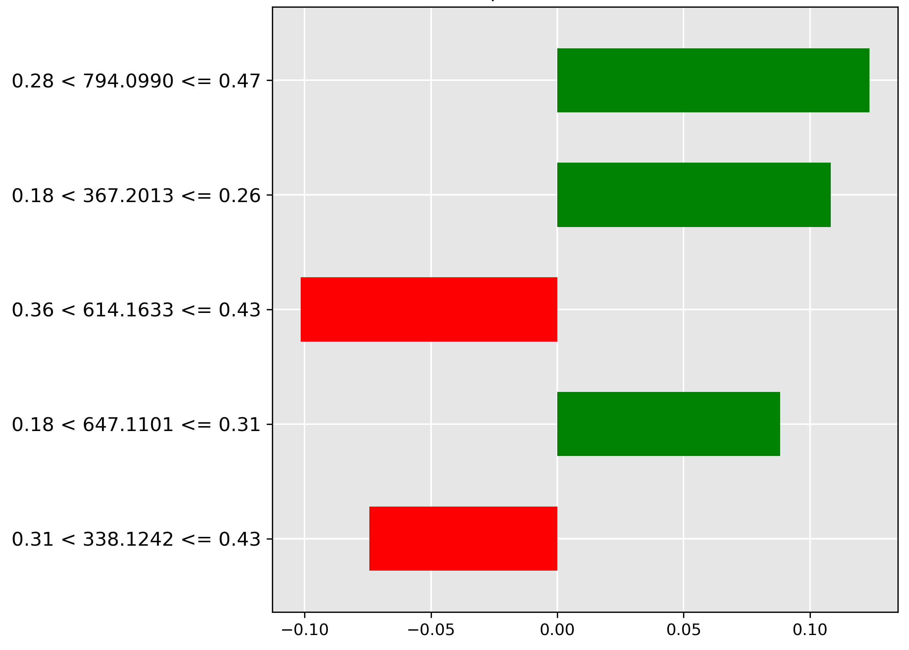
Conversely, inspecting the Hoki prediction in fig:lime-transformer-species-hoki reveals a key exclusionary feature. The strongest negative contributor (red bar) is the high intensity (range \(0.26 < y \le 0.36\)) of the molecular ion \(m/z~229.0710\). The model learns that the strong presence of this ion is a sign the sample is not Hoki.
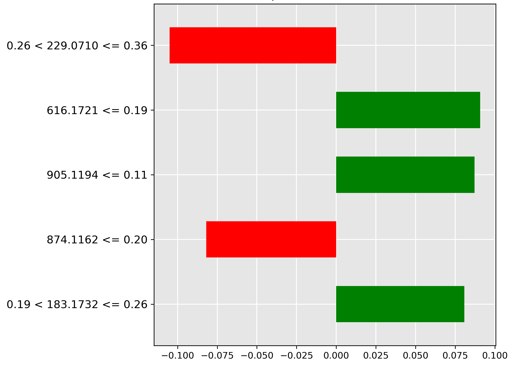
The inherent simplicity of the species distinction is further highlighted by a baseline model. fig:decision-tree shows a simple decision tree achieves near-perfect accuracy with just two binary splits based on two mass-to-charge ratios and their intensity thresholds, demonstrating an accurate yet highly interpretable model.
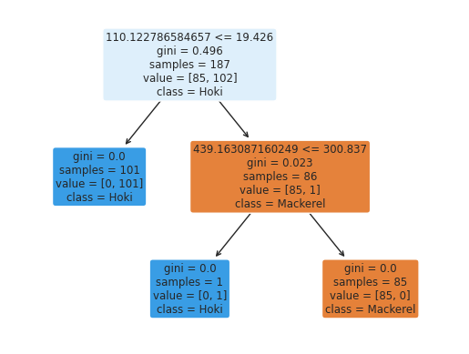
Finally, the average correct Grad-CAM for the species task (fig:species-grad-cam) provides a holistic view of the features that consistently aid classification across all correct predictions. It reveals key mass-to-charge ratio features within the feature index range 200–800 exhibiting high discriminative coefficients (greater than 0.5).
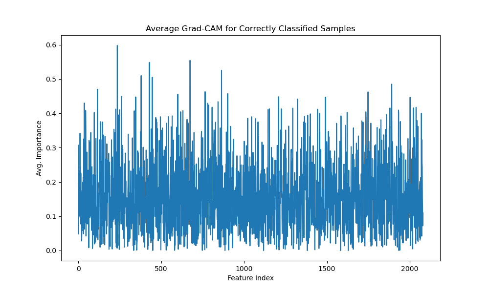
Fish Body Part
The transformer is one of the top performers, achieving \(73.38\%\) accuracy on the more challenging task of discriminating between seven different fish body parts. The LIME explanations below pinpoint the tissue-specific molecular ions that the model uses for identification.
fig:lime-transformer-part-head focuses on the head prediction. The model places high importance (strongest green bar) on the molecular ion \(m/z~256.1089\) when its normalized intensity falls in the range \(0.26 < y \le 0.35\). This ion is likely a metabolic signature abundant in the head tissue.
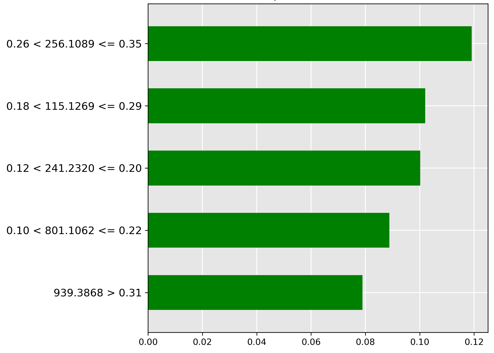
For the fillet classification (fig:lime-transformer-part-fillet), the model heavily discounts (strongest red bar) a high intensity (\(> 0.41\)) of the molecular ion \(m/z~722.0810\). Its strong negative correlation indicates this ion is characteristic of another part, making its absence a strong predictor of the high-value fillet.
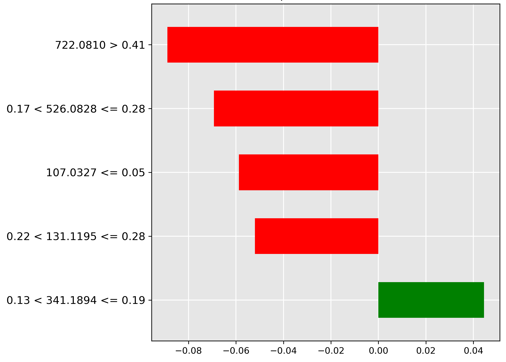
The prediction for liver (fig:lime-transformer-part-liver) is strongly influenced (strongest red bar) by the mass-to-charge ratio \(849.2039~m/z\) when its intensity is in the range \(0.27 < y \le 0.38\). The negative weighting implies a high abundance of the corresponding molecular ion is indicative of other tissue types, but typically not liver.
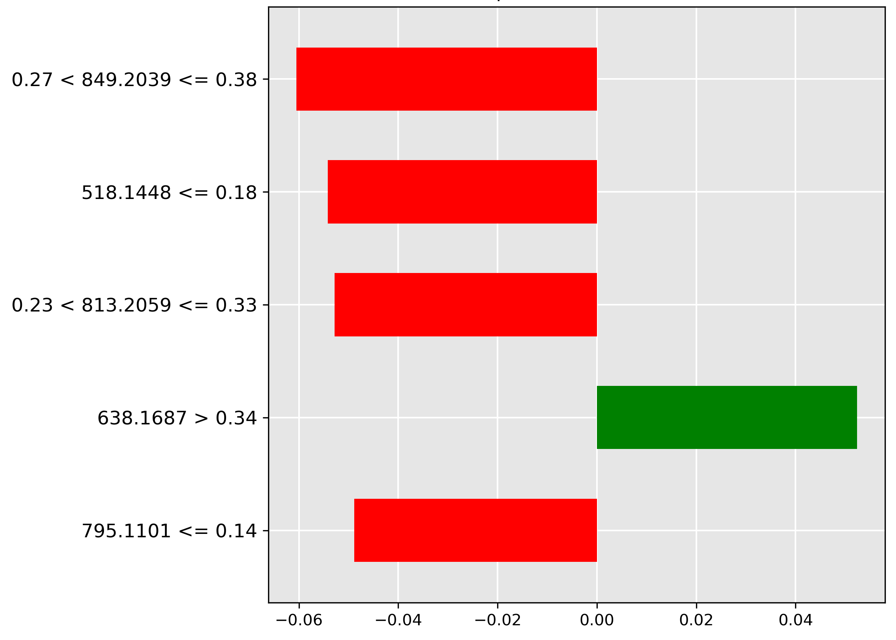
In classifying skins (fig:lime-transformer-part-skins), the model strongly rejects (red bar) samples with a high intensity (\(> 0.32\)) of the molecular ion \(m/z~191.0813\). This suggests that this ion is typically not found in high abundance in skin tissue.
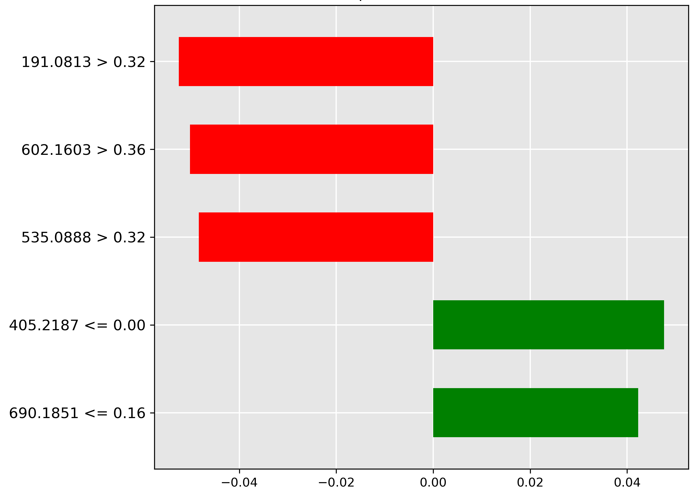
For the guts prediction (fig:lime-transformer-part-guts), the strongest negative indicator (red bar) is the low intensity (\(\le 0.11\)) of the molecular ion \(m/z~675.1786\). The model utilizes the expected presence of a higher abundance of this ion in gut contents to rule out misclassification when it is scarce.
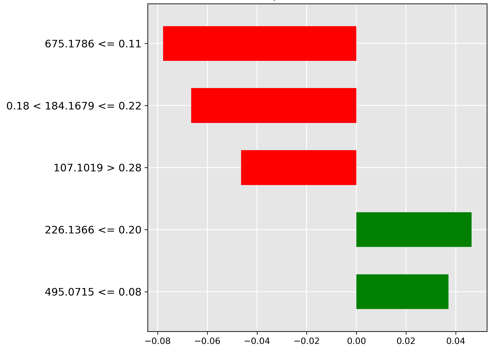
The frames classification (fig:lime-transformer-part-frames) is positively correlated (strongest green bar) with an average to large abundance (range \(0.25 < y \le 0.42\)) of the molecular ion \(m/z~533.161\). This suggests this ion is a chemical marker for skeletal tissue/bone content.
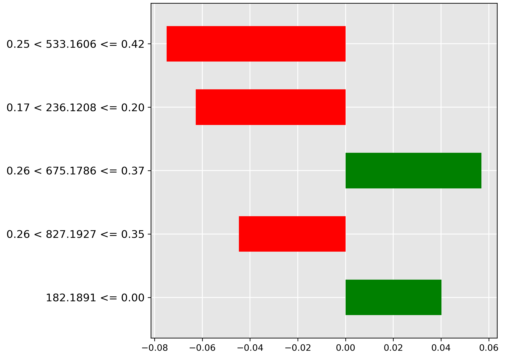
Finally, for the gonads prediction (fig:lime-transformer-part-gonads), the model heavily relies on the absence (red bar) of the molecular ion \(m/z~93.0882\) at a low-to-average intensity (\(0.09 < y \le 0.18\)). The exclusion of this ion helps confirm the ovarian or testicular tissue classification.
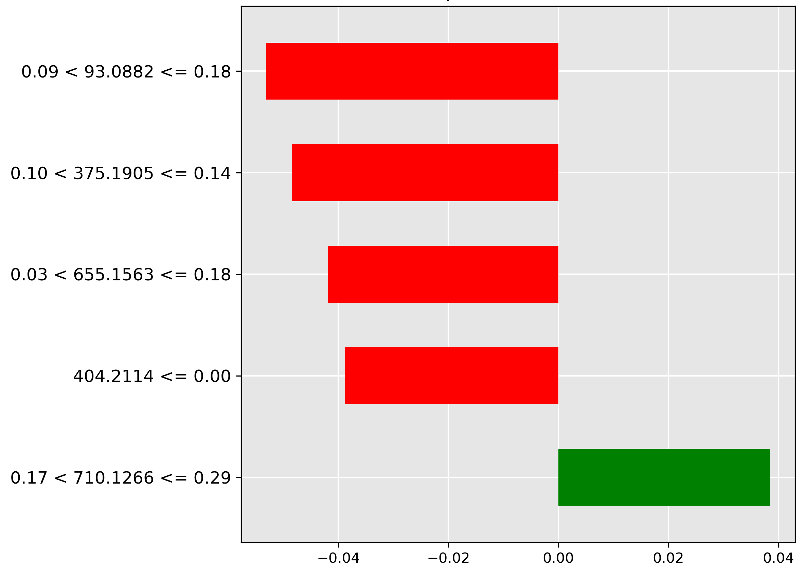
The average correct Grad-CAM for body parts (fig:part-grad-cam) reveals a richer feature landscape than the species task, with high importance features scattered across the spectrum (indices 0–100, 500–600, 1000–1750), suggesting that differentiating between various tissue types requires a more complex molecular signature.
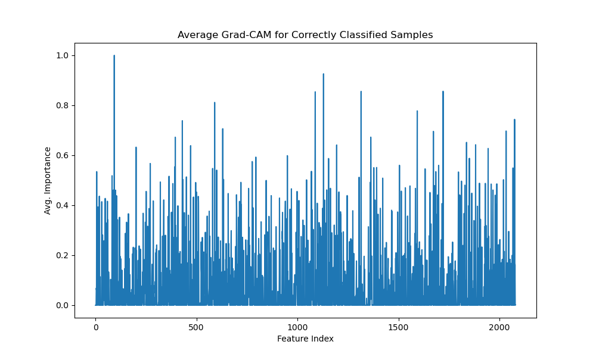
Top 10 Features
In this analysis, we examine the top 10 features for each classification task identified by 1D Grad-CAM analysis for the CNN, LSTM, MoE, and Transformer models. fig:top-features-species gives the top 10 features chart for fish species, and fig:top-features-part gives the top 10 features chart for fish body parts. There are two sets of trends that can be identified from these graphs: model-specific and task-specific trends.
For model-specific trends, we notice similar behaviour in a model on both datasets. For example, the CNN and LSTM both have remarkably convergent behaviour, focusing in on a small subset of important features within a few clusters of mass-to-charge ratios. This behaviour is exaggerated and more apparent for the LSTM. Given that the CNN is looking for 1D spatial relations, and the LSTM is looking for 1D temporal relations, it makes sense that both of these models focus on clusters of mass-to-charge ratios that share a sequential pattern. Perhaps these clusters indicate important feature relationships for each classification task that have been identified by the model. The MoE and Transformer, on the other hand, have more holistic approaches, with a distributed feature subset of important features for each model. This divergent behaviour of models focusing on specific subsets of regions versus holistic regions for their top 10 features suggests that these models would be complementary in their feature selection. This motivated the selection and testing of the CNN + LSTM + Transformer ensemble. Effective ensemble models are built from individual models that are independent, complementary, and diverse. This means the models should make different types of errors and have varied strengths, ensuring they don't all fail in the same way. Ultimately, this diversity allows the ensemble to cancel out individual weaknesses, leading to a more accurate and robust final prediction than any single model could achieve on its own.
For task-specific trends in the data, we notice different behaviour of models across the two tasks. For fish species, the LSTM only has one cluster at the 250 \(m/z\) range, whereas the LSTM has two clusters at the 180 \(m/z\) and 620 \(m/z\) ranges for the fish parts. This suggests that the different tasks focus on different structured sequences of mass-to-charge ratios for each task. The first cluster is better suited towards differentiating between species, while the second two clusters are better for making anatomical differentiations that characterize different tissue types. For fish species, the CNN has one spread out cluster from the 100 - 300 \(m/z\) range, and two features in the 830 \(m/z\) range. Whereas for the fish part, it has one cluster of tightly related features at the 110 \(m/z\) ratio, with other outliers. This suggests that the features around the 110 \(m/z\) ratio are highly discriminative for differentiating between different tissue types, whereas a more holistic approach is required for fish species classification. The opposite of this finding is true for the MoE, where it shows a tighter cluster around the 350 - 700 \(m/z\) for fish species classification, and a more holistic \(m/z\) range for the fish body part classification task. This difference in feature selection between models again highlights the complementarity of these models and their suitability for ensembling. The transformer shows little variation in feature selection between tasks, suggesting a holistic approach for both tasks is appropriate for this model.
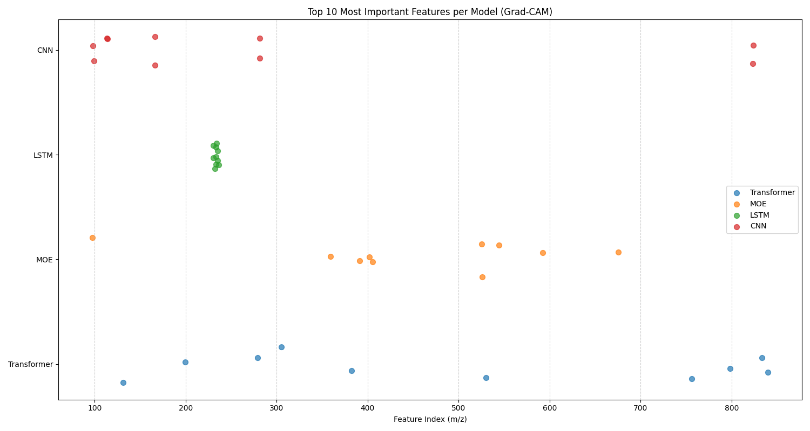
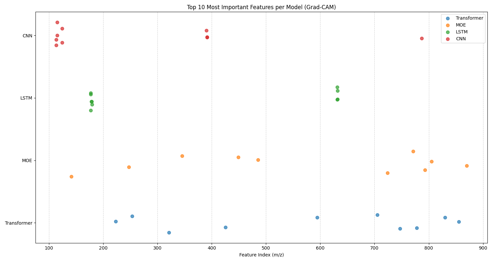
Computational Cost
The runtime benchmark, listed in table tab:model_performance_sp_pt, when compared to the accuracy results from the previous subsection, provides a powerful lesson in matching tool complexity to problem difficulty. The performance benchmarks reveal no single architecture is universally superior, revealing the no free lunch theorem of optimization in action [Wolpert, 2002]. There is a performance tradeoff between cost and capability. The significant runtime and memory costs of the Ensemble and MoE models are not signs of inefficiency, but rather the investment required to achieve high predictive accuracy on these challenging datasets. The key takeaway of this subsection is a shift from asking ``which model is the fastest?" or ``which model is the most accurate?" to more nuanced questions like `"which model"s cost is justified by the problem's demands?"
In terms of computational efficiency, the Transformer and Pretrained variant stand out from the crowd. Their near-instantaneous inference time and training time for the default transformer establish a performance baseline. The extra training time allocated for the pretraining stage must also be accounted for, but the inference time for the default and pretrained variants of the transformer is nearly identical. For real-world applications where resources are constrained, such as running on commodity hardware in a fish processing factory, or 99% accuracy for fish species classification is sufficient, the models are well-suited to the task. They serve as pragmatic choices for the end user. Should high accuracy with a few extra percentage points be required, then more complex systems, such as the MoE and Ensemble, should be considered.
The justification for the more expensive models, the Ensemble and MoE Transformer variants, is given by their superior performance on the two classification tasks, where the baseline models experience a plateau. The Ensemble Transformer performs best for the body parts dataset, where the brute-force approach of combining multiple models is a proven strategy for tackling complex problems. Similarly, the MoE Transformer achieves 100% test accuracy on the fish species dataset. These models offer a `"specialist" tier, where their substantial runtime cost can be sacrificed in exchange for state-of-the-art accuracy. For applications where SOTA accuracy is non-negotiable, the MoE and Ensemble Transformer are the preferred choice.
Lastly, the benchmarks help to provide a practical framework for model selection based on cost-performance analysis. Depending on the constraints of computational resources available in the real-world deployment of these models, and the acceptable test accuracy thresholds for each classification task, a practitioner should choose the model best suited to the job. We offer four transformer-based variants, each Pareto optimal in their sense of cost-performance.
Expert utilization, shown in Fish Species and Part Identification, Fish Species and Part Identification, is balanced across tasks, indicating effective model capacity use without expert collapse.
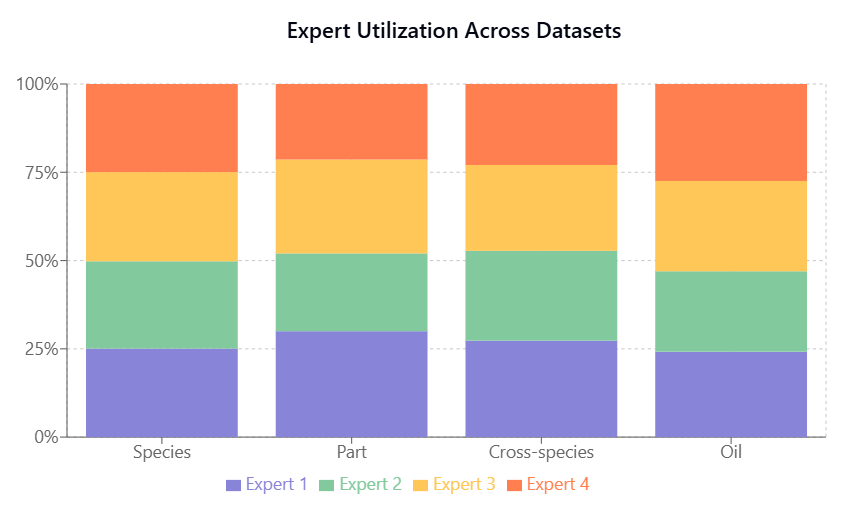
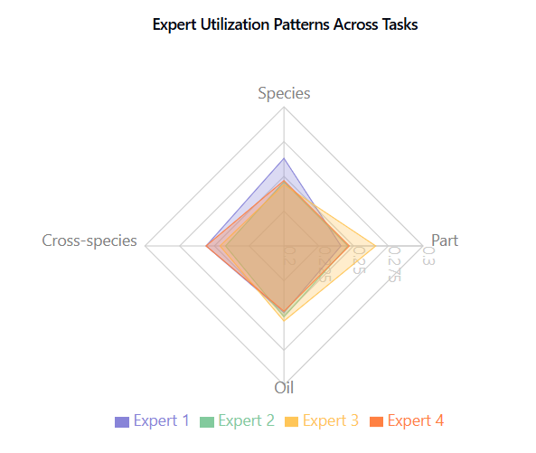
Ablation of MoE Transformer
After analyzing the comparative performance of the routing strategies, we conducted a series of ablation studies to better understand the architectural choices in our MoE Transformer and their impact on the model performance. These studies systematically examine the effects of majority voting versus Top-k routing, expert count, and Top-k routing values, providing insights into the model"s behavior and optimal configuration for different classification tasks.
Majority Voting versus Top-k Routing:
We compared two MoE routing strategies: Top-k routing (dynamically routes inputs to \(k=2\) most relevant experts) and majority voting (processes inputs through all experts and averages outputs). Each variant was tested across four classification tasks with 5 runs per configuration.
As shown in Fish Species and Part Identification, and Fish Species and Part Identification Top-k Routing achieved higher accuracy across all tasks but with greater variance. Majority Voting demonstrated more consistent predictions with lower standard deviations, aligning with previous research [Suzuoki, 2024].
![Majority Voting versus Top-k Routing Bar Chart. This chart gives the test classification accuracy on the fish species and fish body part dataset for the different routing strategies. The experiments demonstrate that for these two classification tasks, Top-k routing is more effective than majority voting. While not illustrated in the chart, the standard deviation of the majority voting method is smaller for fish body parts classification, illustrating more consistent results, which agrees with the literature on this routing strategy.](../assets/routing_accuracy_bar_chart_ch_4.png)
Expert Count Analysis:
We tested model performance with different numbers of experts (E=2, 4, 8) across two classification tasks, running each variant 5 times. Results are shown in Fish Species and Part Identification and Fish Species and Part Identification.
Key findings: (1) E=4 achieved optimal performance on species (100%) and part classification (72.46%); (2) E=4 provides the best balance between specialization capacity and ensuring sufficient training data per expert.
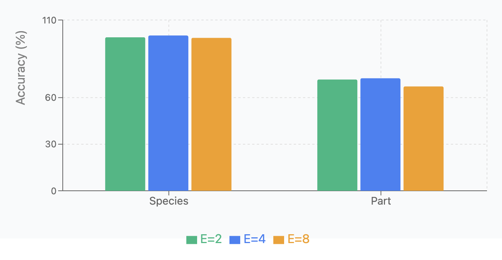
Top-k Routing:
We compared performance with different k values (1, 2, 4) across the same four tasks, using the same experimental setup. Results are shown in Fish Species and Part Identification and Fish Species and Part Identification.
Key findings: (1) \(k=2\) achieved perfect accuracy on species classification; (2) \(k=2\) performed best for part classification, but with high variability; (3) Overall, \(k=2\) provides the best balance between specialization and redundancy for most tasks.
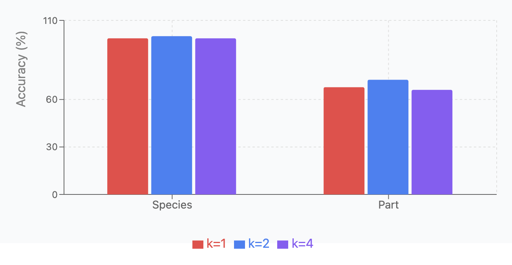
Chapter Summary
Overall, this research opens up new possibilities for automated, accurate, and interpretable analysis in marine biomass compositional studies, with significant implications for quality control, product optimization, and food safety in marine-based industries.
Conclusions
This chapter's key conclusions establish the supremacy of deep learning methods over traditional machine learning techniques, including OPLS-DA, for analyzing sequential REIMS-based data. Deep learning models excel because they have fewer inductive biases and make fewer assumptions, which enables them to learn more complex patterns from the data. To overcome the ``black box" nature of these models, post-hoc explainability techniques were applied to make a series of simplifying assumptions, allowing for an understanding of the key features that drive classification decisions. The research also found that the MoE Transformer architecture achieves balanced expert utilization, which avoids expert collapse and ensures that model capacity is used efficiently.
Future Work
While our study has yielded promising results, it also opens up numerous avenues for further research and development. These are potential directions for expanding and refining our approach. Those directions for future work include:
- Real-world validation and deployment: Develop a system for real-time in-situ REIMS data acquisition and analysis, allowing for immediate classification results in industrial settings.
- Regulation: Work with regulatory bodies to ensure that the developed methods meet or exceed current standards for marine biomass analysis and food safety monitoring.
- Dynamic Expert Allocation: Investigating mechanisms for dynamically adjusting the number of experts based on task complexity. This could involve developing adaptive routing strategies that optimize computational efficiency while maintaining accuracy.
- Real-time Optimization: Developing techniques to reduce inference time, particularly through expert pruning and model compression, to better meet the real-time requirements of industrial seafood processing.